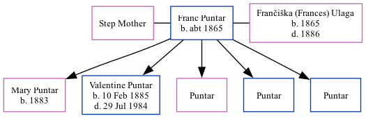

Franc Eske Puntar c1865 -
[ Home ] | [ Calendar ] | [ Surnames Index ] | [ Family History ]Franc Puntar, the great-great-grandfather of Michele Copp (née Phillips), was born in Cemicnik, Slovenia c. 1865 was married twice - to Step Mother Frančiška (Frances) Ulaga. He had 5 children with Frančiška (Frances) Ulaga: Mary and Valentine.
During his life, he lived in Zickints Austria1.
He died in Slovenia.
Children
- Mary was born in 1883
- Valentine was born on Feb 10, 1885
Citations
- New York Passenger Lists, 1820-1957 Online publication - Provo, UT, USA: The Generations Network, Inc., 2006.Original data - Passenger Lists of Vessels Arriving at New York, New York, 1820-1897; (National Archives Microfilm Publication M237, 675 rolls); Records of the U.S. Customs Service, R
Family Tree
Generated by ged2site. Last updated on Sep 9, 2024